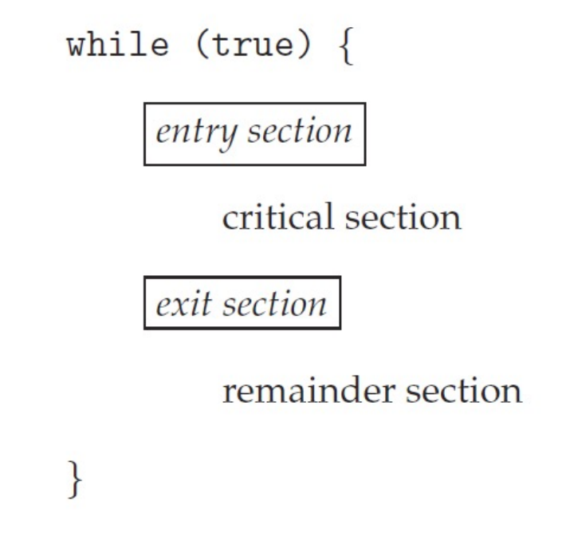
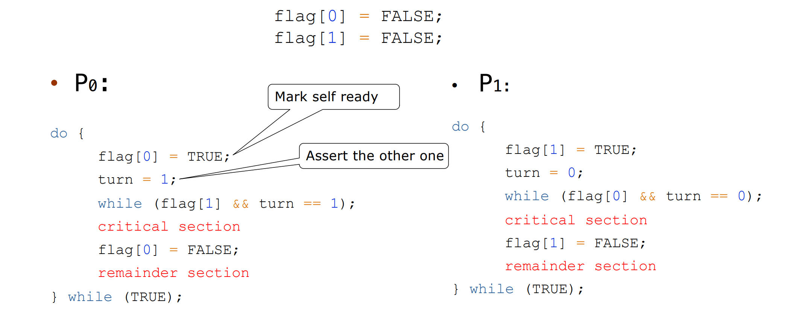
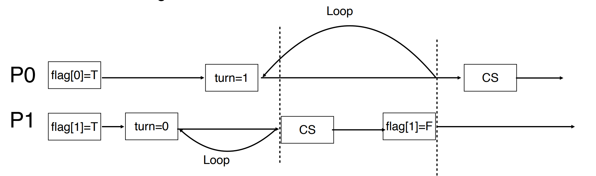

Synchronization¶
Race Condition¶
Several processes (or threads) access and manipulate the same data concurrently and the outcome of the execution depends on the particular order in which the access takes place, is called a race-condition. 多个进程并行地写数据，结果取决于写的先后顺序，这就是竞争条件。
kernel 里面 race 经常发生，在内核中，比如两个进程同时 fork，子进程可能拿到一样的 pid。
critical section
修改共同变量的区域称为 critical section；共同区域之前叫 entry section，之后叫 exit section。

- Single-core system: preventing interrupts
- Multiple-processor: preventing interrupts are not feasible (depending on if kernel is preemptive or non-preemptive)
- Preemptive – allows preemption of process when running in kernel mode
- Non-preemptive – runs until exits kernel mode, blocks, or voluntarily yields CPU
解决方案需要： + Mutual Exclusion（互斥访问） + 在同一时刻，最多只有一个线程可以执行临界区 + Progress（空闲让进） + 当没有线程在执行临界区代码时，必须在申请进入临界区的线程中选择一个线程，允许其执行临界区代码，保证程序执行的进展 + Bounded waiting（有限等待） + 当一个进程申请进入临界区后，必须在有限的时间内获得许可并进入临界区，不能无限等待
Perterson's Solution

It assumes that LOAD and STORE are atomic,(atomic: execution cannot be interrupted)
验证上面三个条件：
+ Mutual Exclusion
+ P0 enters CS:
+ Either flag[1]=false or turn=0
+ Now prove P1 will not be able to enter CS
+ Case 1: flag[1]=false P1 is out CS
+ Case 2: flag[1]=true, turn=1 -> P0 is looping, contradicts with P0 is in CS
+ Case 3: flag[1]=true, turn=0 -> P1 is looping
+ Process requirement

- Bounded waiting
Whether P0 enters CS depends on P1; Whether P1 enters CS depends on P0; P0 will enter CS after one limited entry P1
Peterson’s Solution is not guaranteed to work on modern architectures.
- Only works for two processes case
- It assumes that LOAD and STORE are atomic
- Instruction reorder 指令会乱序执行。
wait 和 signal 都要是 automatic 的，不能被打断。 linux 内 spinlock(mutexlock) 用的多，很多操作都是很短的对一个变量操作。
长的用 semaphore，存在 context-switch，
长短用 context-switch 来比较。
Synchornization Examples¶
Bounded-Buffer Problem¶
Two processes, the producer and the consumer share n buffers
- the producer generates data, puts it into the buffer
- the producer won’t try to add data into the buffer if it is full.
- the consumer consumes data by removing it from the buffer.
- the consumer won’t try to remove data from an empty buffer.
需要定义哪些变量？
- n buffer
- mutex initialized to 1
- full-slots initialized to 0
- empty-slots initialized to n
需要些几条语句，顺序也很关键
-
producer process
-
consumer process
Readers-writers problem¶
A data set is shared among a number of concurrent processes + readers: only read the data set; they do not perform any updates + writers: can both read and write
Problems: 多个 reader 可以共享，即同时读；但只能有一个 write 访问数据（写和读也不共享）。
Solution:
- semaphore mutex initialized to 1
- semaphore write initialized to 1
-
integer readcount initialized to 0
-
Writer process
-
Reader process
mutex 是保护 readcount。第一个 reader 在等到 writer 释放以后，就把 mutex 释放，后面的 reader 由于 readcount 不为 1，所以不会再次 wait(write)，就都可以 read data。
Reader first¶
如果有 reader holds data，writer 永远拿不到锁，要等所有的 reader 结束。
Writer first¶
如果 write ready 了，他就会尽可能早地进行写操作。If reader holds data, new reader will wait for suspended writer.
上面的 solution 是 reader first。
如果一个 reader 在 read data 的过程中被 interrupt，下一个进程是一个 writer，但是这个 writer 是在 write.waiting.queue ，所以调度也调不到它。
判断一个进程能否被调度，要看在 ready queue 还是 waiting queue。
Dining-philosophers problem¶
Philosophers spend their lives thinking and eating, they sit in a round table, but don’t interact with each other.
每次只能拿一根筷子，但是要拿到两只筷子才能吃饭。例如如果每个人都先拿自己右边的筷子，再准备拿左边的筷子，就会卡死。
Solution: only odd philosophers start left-hand first, and even philosophers start right-hand first. This does not deadlock.